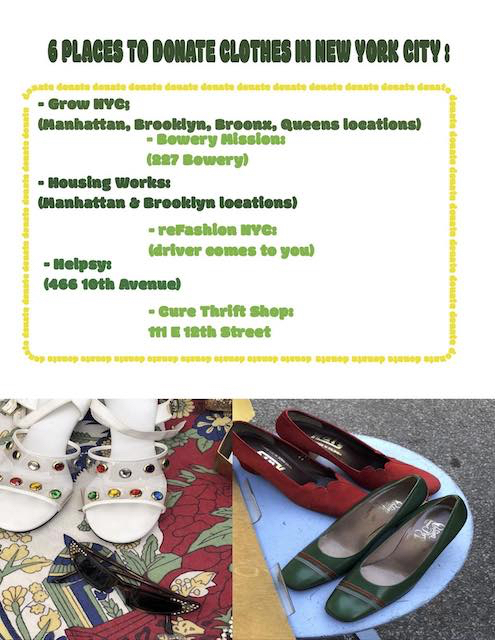

Donating and thrifting is a great way to reuse, reduce, and recycle ♻️ our clothes. It helps save money and also gives opportunities for other who may be less fortunate get new clothes. This poster is a collection of places in New York where you are able to donate your items, whether you want to clean out your closet, or know that an item would be put to better use in other hands! 🤗 This is my website for 2020 Journalism and Design Toolkit Course for Professor Jason Das This is a link to an external site.
To be navigated back to my homepage, click here ⬅️